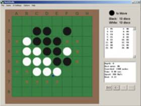

NEW! – MiddOthello
(MiniOthello GUI Version)

Rules of the Game:
Our implementation is in C/C++ (essentially in C except
some C++ syntax)
There are three major problems for this: Representation of the board, search and evaluation.
Board Representation:
There are various ways to represent the board, all of which, however, fall in one of the two categories: arrays or bitmaps.
Our original effort was to represent the board as a 4 bitmaps of one word (32-bit) each, two for each color. The advantage is that it is compact, taking very little storage space, and that a flipping discs operation, which happens most often in a game, can be done with the fast XOR command. Moreover bitmaps allows extensive pattern matching in evaluation to be performed at a fast speed. However, accessing each individual cell to find out what disc is in it can be a bit slow and the implementation is more complicated. Since we are only doing a 2-week term project rather than a whole semester independent project, we decided on the simpler array approach, which, if well implemented, can still yield a good result.
Search:
As almost all game playing programs, our Othello player uses
a minimax search with alpha-beta pruning. It also uses some move ordering in
order to help pruning more quickly. The move ordering is very primitive, and it
simply tests first the placed around the disc which the opponent has just
played, since there is a somewhat larger probability that those places will be
more favorable.
Evaluation Function:
We have implemented two evaluation functions used during two different stages of the game. A heuristic evaluation function is used during the beginning and mid-game when the board is still being filled; an optimal brute-force evaluation function is used during the final stage of the game, when there are few moves left until the board gets full. The default cut-off point when use of the optimal evaluation function starts is when there are 14 empty squares left on the board. Now, we describe each of the two evaluation functions:
Heuristic Evaluation Function
Our heuristic function returns an integer specifying the attractiveness of a potential move. The greater the number, the more attractive a given move is. The number returned is evaluated through three components: disc count, legal moves count, and corner squares. We now describe each of the three components.
Disc Count
Since the goal of the game is to have more discs than the opponent, one would think that a good evaluation function would simply compute the two players’ disc balance at each search node. In practice, we found that maximizing one’s disc count is a very poor strategy and that we could easily beat a program using such an evaluation function. For this reason we give very little weight to a player’s number of discs, namely a weight of 1/100; in fact, some programs even give negative weight to disc count.
Legal Moves Count
The number of legal moves one can make is the primary evaluation component and each legal move is counted as 1. Thus, one legal move is worth a hundred discs—more than could be placed on the board! This is intentional—when comparing two moves, the number of discs is irrelevant unless the number of legal moves is equal in which case we prefer the move that results in a greater disc count.
Corner Squares
The squares in the corners of the board are strategic positions that result in great advantage when occupied; furthermore, a disc in a corner square can never be flipped. For this reason, we have assigned a value of 10 to each corner square, and thus one corner square is worth 10 legal moves or 1000 discs.
Brute-Force Evaluation Function
The brute-force evaluation function is optimal and is used whenever we can build the whole game search-tree. The function has two modes of execution. One mode tries to maximize the computer’s number of extra discs in a win-condition (or alternatively, if the computer cannot win, it tries to minimize the player’s number of extra discs). The other mode does not care about how many discs the computer can win by, but just whether it can win. The brute-force evaluation function kicks in at the end of the game when the board is nearly full (the default cut-off is 14 empty squares left).
Possible Improvements:
Resources:
You can find Mini-Othello executable for Windows here, binary for Linux here, and its source code here.
The source code can be compiled under Windows/Linux with GCC 2.95 or above. However, GCC 2.95 is recommended. For some reason executable compiled with GCC 3.x is much has much bigger size and runs much more slowly. It would be nice if somebody can tell me why.
The source code is in public domain.
(Version for the term project: 0.01-alpha-1)
Other:
A sample transcript of a practice game between Dobo Radichkov and Mini-Othello
** NOTE **:
Previous information about the program on this page refers only to the “term project” version (0.01alpha1), and does not apply to later versions.
Later Developments (by Yunpeng Li)
Major improvement (as of 0.01p):
Changed board representation (increase search speed).
Added move ordering (help alpha-beta pruning).
Adjusted and added more features to the evaluation function.
Added quiescence search.
Made a faster end-game solver.
Added more utilities and user options.
Linux/Windows executable is now compiled using GCC 3.4.x or 4.x.
Download:
0.01alpha2: Source code, binary (exe) for windows
0.01b: Source code
0.01f: Source code
0.01m: Source code, binary (exe) for windows
0.01n: Source code, binary (exe) for windows
0.01p: Source code, binary (exe) for windows
0.02b: Source code, binary (exe) for Windows
0.02d: Source code, binary (exe) for Windows
0.02e: Source code, binary (exe) for Windows
0.03a: Source code, binary (exe) for Windows, Cygwin dll runtime support
0.03b: Source code, binary (exe) for Windows (Cygwin dll is no longer needed)
Warning: Source code is extremely ugly and ill written. It only just works (most of the time). It is probably not worth looking at for anyone.
Go to the GUI version (i.e. w/ graphical user interface)
Acknowledgement:
Mini-Othello is has an
end-of-game solver (in C) obtained from the web (in public domain). It has been
improved and optimized by several expert-level programmers. We managed to put
it into our program in order to do a speed comparison. The result shows that
the complex end of game solver is around 10 times faster than simply using our
standard minimax. That shows the space of improvement ahead of our program.
(The external end game solver is no longer included in the source code since version 0.01n.)
Reference:
Logistello’s homepage: http://www.cs.ualberta.ca/~mburo/log.html
Writing an Othello program: http://www.nada.kth.se/~gunnar/howto.html
WZebra: One of the strongest Othello programs nowadays. http://www.nada.kth.se/~gunnar/zebra.html
Reversi/Othello V2.4 by Th. Wolf: http://home.tiscalinet.ch/t_wolf/tw/misc/reversi/